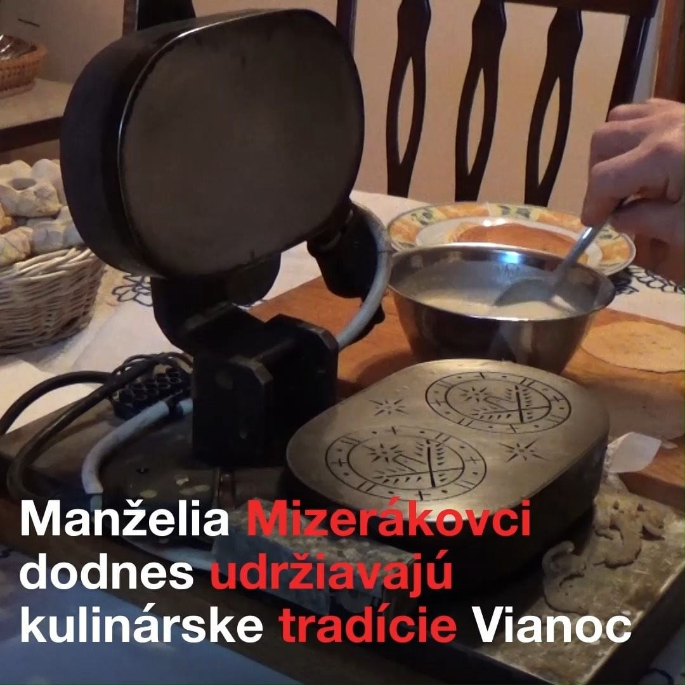

Zázvorníky podľa @trencianskyterajsok — Normy Jedál
🎄🥣 K Vianociam neodmysliteľne patria vianočné oblátky. V dedinke Pobedim pečú okrem voňavých oblátok aj tradičné zázvorníky. ❄🎄
#trencianskyterajsok #pobedim #vianoce #oblatky #zazvorniky #carovianoc